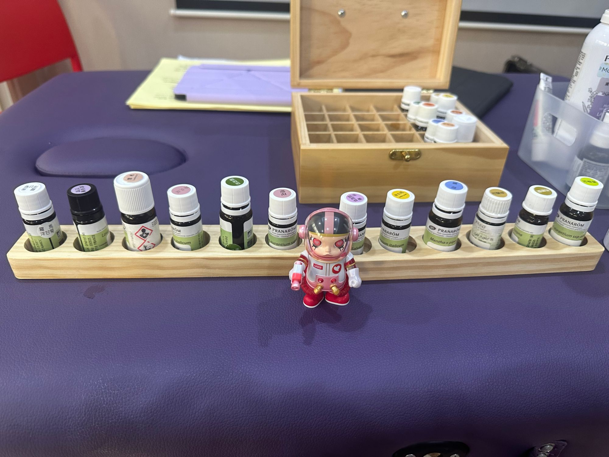
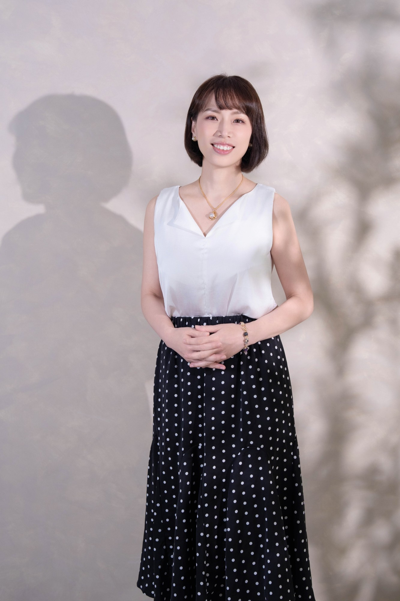

給一直在照顧別人、也想好好認識自己的你。
這 90 分鐘，你會親手抽一支油、調一小瓶帶回家，也會看到自己的人類圖身體圖。
＿月＿日（＿）＿＿:＿＿｜桃園（實體）｜限 ＿＿ 位
對別人的需要很敏感，對自己的累，卻很遲鈍。
上了很多課、做過很多測驗，生活還是老樣子。
明明很努力，心裡卻常冒出一句「怎麼又這樣」。
想說出自己現在的狀態，一開口，又不知道從哪裡講起。
你的身體和心，其實一直在說話。那天，我們一起停下來聽一次。

精油側寫：你抽到的那支油，常常說的是你現在缺的。能放鬆的油，說你繃得太緊；能補身的油，說你已經耗損太久。不用回憶、不用一直講，也能被看見。
人類圖：身體圖上空白的地方，會吸收、放大身邊人的情緒和壓力。跟某些人在一起特別累，常常是這個原因。
看懂自己在哪裡被影響，你也會開始看懂身邊的人：另一半回家為什麼像洩了氣，同事為什麼跟你節奏不同，準備好的那通電話為什麼一直打不出去。
瓶身遮住，憑感覺抽。抽到哪個植物部位，一句話說中你最近的狀態。
在植物油裡滴一滴你抽到的油，貼上自己的名字，回家想起來就聞一聞。
依你報名時留下的出生資料，我會先幫你印好，當天直接交給你。
一張屬於你那支油的小卡；加入 LINE，再領一份人類圖簡介，可以拿去畫你最想看懂的那個人。
一直在照顧別人，輪到自己卻不知道從哪裡開始。
塔羅、人類圖或其他工具都碰過，還是卡在同一個地方。
說不出哪裡不對，只知道心裡有東西壓著。
對精油、人類圖好奇，想先從最基本的開始。

在醫學中心的手術室，我看到的都是已經發生的事，只能針對已經發生的狀況去處置。開始進修之後，心裡一直有個問題放不下：為什麼一定要等到變成既定事實，才去處理？
我相信，事情還沒變得那麼糟之前，我們都還有機會先幫自己。所以我離開臨床，用精油側寫和人類圖，陪長期照顧別人的人，重新聽見自己的聲音。
| 日期 | ＿月＿日（＿）＿＿:＿＿–＿＿:＿＿ |
|---|---|
| 地點 | ＿＿＿＿＿＿（桃園，實體） |
| 時間長度 | 約 90 分鐘 |
| 費用 | 單人 NT$599 ｜ 雙人同行 NT$1,000（每人 NT$500） 當天報名「本質之鑰」課程，說明會費用依每人實付金額全額折抵。 |
| 名額 | 限 ＿＿ 位（每個人都要抽油、調香、拿身體圖，人數不多才照顧得到） |
| 請帶 | 帶自己來就好，當天不需要準備任何精油。 |
可以。說明會從最基本的開始，不用先懂任何術語。
人類圖是用出生資料排出來的。我會在說明會前先幫你印好身體圖，當天直接交給你。資料只用在這次排盤，不會另作他用。
留大概的時段就好，註明「不確定」，我會跟你說明可能的差異。
可以來，報名時先告訴我。現場有幾支油不適合懷孕、哺乳或特定狀況使用，抽到的話會請你換一支；調好的小瓶也會附上使用提醒。
最後會介紹接下來的「本質之鑰」課程（2 天實體課＋一對一 48 支精油深度側寫＋21 天陪伴）。要不要報名完全由你決定，沒有報名，也一樣能帶走當天所有的東西。
精油側寫需要現場聞、現場抽，所以說明會只有實體場。
有任何問題，歡迎到官方 LINE @864ihpsq 私訊我。